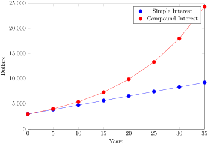

Discussing interest starts with the principal, or amount your account starts with. This could be a starting investment, or the starting amount of a loan. Interest, in its most simple form, is calculated as a percent of the principal.
For example, if you borrowed $100 from a friend and agree to repay it with 5% interest, then the amount of interest you would pay would just be 5% of 100: $100(0.05) = $5. The total amount you would repay would be $105, the original principal plus the interest.
Definition5.1.1.Simple One-time Interest.
Simple interest can be computed with:
\begin{equation*}
I = P_0rt
\end{equation*}
\begin{equation*}
A = P_0 + I = P_0 + P_0rt = P_0\left(1+rt\right)
\end{equation*}
where,
I is the interest
A is the end amount: principal plus interest
\(P_0\) is the principal (starting amount)
r is the interest rate (in decimal form. Example: 5% = 0.05)
Example5.1.2.
A friend asks to borrow $300 and agrees to repay it in 30 days with 3% interest. How much interest will you earn?
One-time simple interest is only common for extremely short-term loans. For longer term loans, it is common for interest to be paid on a daily, monthly, quarterly, or annual basis. In that case, interest would be earned regularly. For example, bonds are essentially a loan made to the bond issuer (a company or government) by you, the bond holder. In return for the loan, the issuer agrees to pay interest, often annually. Bonds have a maturity date, at which time the issuer pays back the original bond value.
Example5.1.3.
Suppose your city is building a new park, and issues bonds to raise the money to build it. You obtain a $1,000 bond that pays 5% interest annually that matures in 5 years. How much interest will you earn?
Each year, you would earn 5% interest: $1000(0.05) = $50 in interest. So over the course of five years, you would earn a total of $250 in interest. When the bond matures, you would receive back the $1,000 you originally paid, leaving you with a total of $1,250.
We can generalize this idea of simple interest over time.
Definition5.1.4.Simple Interest over Time.
To compute simple sinterest over time,
\begin{equation*}
I = P_0rt
\end{equation*}
\begin{equation*}
A = P_0 + I = P_0 + P_0rt = P_0\left(1 + rt\right)
\end{equation*}
where,
I is the interest
A is the end amount: principal plus interest
\(P_0\) is the principal (starting amount)
r is the interest rate in decimal form
t is time
The units of measurement (years, months, etc.) for the time should match the time period for the interest rate.
Definition5.1.5.APR - Annual Percentage Rate.
Interest rates are usually given as an annual percentage rate (APR) - the total interest that will be paid in the year. If the interest is paid in smaller time increments, the APR will be divided up.
For example, a 6% APR paid monthly would be divided into twelve 0.5% payments. A 4% annual rate paid quarterly would be divided into four 1% payments.
Example5.1.6.
Treasury Notes (T-notes) are bonds issued by the federal government to cover its expenses. Suppose you obtain a $1,000 T-note with a 4% annual rate, paid semi-annually, with a maturity in 4 years. How much interest will you earn?
Using \(I = P_0rt\text{,}\) we get \(30 = 500\cdot r \cdot 1\text{.}\) Solving, we get r = 0.06, or 6%. Since the time was monthly, this is the monthly interest. The annual rate would be 12 times this: 72% interest.
Subsection5.1.2Compound Interest
With simple interest, we were assuming that we pocketed the interest when we received it. In a standard bank account, any interest we earn is automatically added to our balance, and we earn interest on that interest in future years. This reinvestment of interest is called compounding.
Suppose that we deposit $1000 in a bank account offering 3% interest, compounded monthly. How will our money grow?
The 3% interest is an annual percentage rate (APR) - the total interest to be paid during the year. Since interest is being paid monthly, each month, we will earn 12 %3 = 0.25% per month.
In the first month,
\begin{align*}
P_0 \amp = \$1000\\
r \amp = 0.0025\\
I \amp = \$1000 \left(0.0025 \right) = \$2.50\\
A \amp = \$1000 + \$2.50 = \$1002.50
\end{align*}
In the first month, we will earn $2.50 in interest, raising our account balance to $1002.50.
Notice that in the second month we earned more interest than we did in the first month. This is because we earned interest not only on the original $1000 we deposited, but we also earned interest on the $2.50 of interest we earned the first month. This is the key advantage that compounding of interest gives us.
Table 5.1.8 does this computation for a few more months.
Table5.1.8.
Month
Starting Balance
Interest Earned
Ending Balance
1
1000
2.50
1002.50
2
1002.50
2.51
1005.01
3
1005.01
2.51
1007.52
4
1007.52
2.52
1010.04
5
1010.04
2.53
1012.57
6
1012.57
2.53
1015.10
7
1015.10
2.54
1017.64
8
1017.54
2.54
1020.18
9
1020.18
2.55
1022.73
10
1022.73
2.56
1025.29
11
1025.29
2.56
1027.85
12
1027.85
2.57
1030.42
To find an equation to represent this, if Pm represents the amount of money after m months, then we could write the recursive equation:
\(P_0 = \$1000\)
\(P_m = \left(1+0.0025 \right)P_{m-1}\)
You probably recognize this as the recursive form of exponential growth. If not, we could go through the steps to build an explicit equation for the growth:
Notice that the $1000 in the equation was P0, the starting amount. We found 1.0025 by adding one to the growth rate divided by 12, since we were compounding 12 times per year. Generalizing our result, we could write
\(m\) is the number of compounding periods (months in our example)
\(r\) is the annual interest rate
\(k\) is the number of compounds per year.
While this formula works fine, it is more common to use a formula that involves the number of years, rather than the number of compounding periods. If \(N\) is the number of years, then \(m = N k\text{.}\) Making this change gives us the standard formula for compound interest.
\(P_N\) is the balance in the account after \(N\) years.
\(P_0\) is the starting balance of the account (also called initial deposit, or principal)
\(r\) is the annual interest rate in decimal form
\(k\) is the number of compounding periods in one year.
If the compounding is done annually (once a year), \(k = 1\text{.}\)
If the compounding is done quarterly, \(k = 4\text{.}\)
If the compounding is done monthly, \(k = 12\text{.}\)
If the compounding is done daily, \(k = 365\text{.}\)
The most important thing to remember about using this formula is that it assumes that we put money in the account once and let it sit there earning interest.
Example5.1.10.
A certificate of deposit (CD) is a savings instrument that many banks offer. It usually gives a higher interest rate, but you cannot access your investment for a specified length of time. Suppose you deposit $3000 in a CD paying 6% interest, compounded monthly. How much will you have in the account after 20 years?
Let us compare the amount of money earned from compounding against the amount you would earn from simple interest.
Table5.1.11.
Years
Simple Interest ($15/month)
6% Compound Monthly
5
$3900
$4046.55
10
$4800
$5458.19
15
$5700
$7362.28
20
$6600
$9930.61
25
$7500
$13,394.91
30
$8400
$18,067.73
35
$9300
$24,370.65

Figure5.1.12.
As you can see, over a long period of time, compounding makes a large difference in the account balance. You may recognize this as the difference between linear growth and exponential growth.
Note5.1.13.Evaluating exponents on the calculator.
When we need to calculate something like \(5^3\) it is easy enough to just multiply \(5\cdot 5 \cdot 5=125\text{.}\) But when we need to calculate something like \(1.005^{240}\text{,}\) it would be very tedious to calculate this by multiplying 1.005 by itself 240 times! So to make things easier, we can harness the power of our scientific calculators.
Most scientific calculators have a button for exponents. It is typically either labeled like:
^, \(y^x\), or \(x^y\)
To evaluate \(1.005^{240}\) we'd type 1.005^240. Try it out - you should get something around 3.3102044758.
Example5.1.14.
You know that you will need $40,000 for your child’s education in 18 years. If your account earns 4% compounded quarterly, how much would you need to deposit now to reach your goal?
So you would need to deposit $19,539.84 now to have $40,000 in 18 years.
Note5.1.15.Rounding.
It is important to be very careful about rounding when calculating things with exponents. In general, you want to keep as many decimals during calculations as you can. Be sure to keep at least 3 significant digits (numbers after any leading zeros). Rounding 0.00012345 to 0.000123 will usually give you a “close enough” answer, but keeping more digits is always better.
Example5.1.16.
To see why not over-rounding is so important, suppose you were investing $1000 at 5% interest compounded monthly for 30 years.
\begin{align*}
P_0 \amp = 5000\\
r \amp = 0.05\\
k \amp = 12\\
N \amp = 30
\end{align*}
Here is the effect of rounding this to different values:
Table5.1.17.
r/k rounded to:
Gives \(P_{30}\) to be:
Error
0.004
$4208.59
$259.15
0.0042
$4521.45
$53.71
0.00417
$4473.09
$5.35
0.004167
$4468.28
$0.54
0.0041667
$4467.80
$0.06
no rounding
$4467.74
If you’re working in a bank, of course you wouldn’t round at all. For our purposes, the answer we got by rounding to 0.00417, three significant digits, is close enough - $5 off of $4500 isn’t too bad. Certainly keeping that fourth decimal place wouldn’t have hurt.
Note5.1.18.Using your Calculator.
In many cases, you can avoid rounding completely by how you enter things in your calculator. For example, in the example above, we needed to calculate
The previous steps were assuming you have a “one operation at a time” calculator; a more advanced calculator will often allow you to type in the entire expression to be evaluated. If you have a calculator like this, you will probably just need to enter: